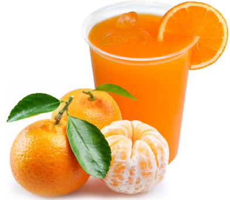

◖Coffrey◗
Tangerine juice
Ingredients:
1/2 glass of water
3 well-ripe tangerines
1 spoonful of sugar, more or less, to taste.
Peel pieces
Crushed ice
Preparation:
Put all the ingredients in a blender and beat. If you wish, add a little bit of peel to give it a little bitterness. Strain and serve with more ice.
